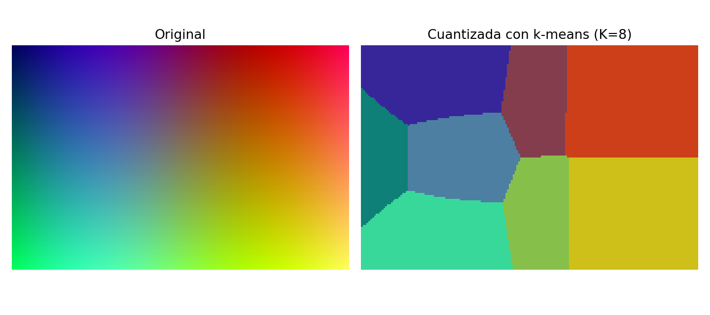

k-means en 10 minutos
Aprendizaje no supervisado · Clustering · Visualización 2D
¿Qué haremos hoy?
- ML en 60 segundos: 3 familias
- Por qué el no supervisado importa
- Construimos k-means con el público
- Demo 2D paso a paso + aplicación real
Motivación (universidad)
Caso típico: tenemos datos, pero no “respuestas correctas”.
- Respuestas abiertas de encuestas
- Patrones de interacción en el campus virtual
- Temas en artículos / abstracts
- Perfiles de participantes (¡como hoy!)
Pregunta guía: ¿hay estructura escondida?
Idea clave
Antes de predecir, a menudo necesitamos explorar y agrupar.
Etiquetar datos suele ser caro, lento o ambiguo.
Machine Learning (muy general)
3 familias de ML
Supervised
Hay etiqueta (respuesta correcta).
Ej.: spam / no spam, precio vivienda
Unsupervised
No hay etiqueta.
Ej.: clustering, PCA, anomalías
Reinforcement
Aprende por recompensa en un entorno.
Ej.: juegos, robótica
¿Por qué no supervisado?
- Porque no siempre hay etiquetas
- Porque ayuda a explorar datos y generar hipótesis
- Porque permite segmentar (perfiles, temas, grupos)
- Porque detecta anomalías (lo raro)
Hoy: clustering → k-means.
Ejemplos clásicos
Clustering
- Segmentación de perfiles
- Temas en textos
- Agrupar comportamientos
Reducción de dimensión
- PCA para visualizar / resumir
Anomalías
- Fraude / sensores / registros raros
Problema
Tenemos puntos “sin etiqueta”. Queremos agruparlos en K grupos.
Preguntas: ¿qué es un grupo? ¿cómo lo representamos?

Brainstorming: inventemos un algoritmo
- ¿Qué significa “mismo grupo”? → cercanía
- ¿Representante del grupo? → un centro
- Si tengo centros: ¿cómo asigno puntos? → al más cercano
- Si tengo asignaciones: ¿cómo actualizo centros? → promedio
- ¿Cuándo paro? → cuando ya no cambie
k-means (en una diapositiva)
- Inicializa K centros
- Asigna cada punto al centro más cercano
- Actualiza cada centro como la media de su grupo
- Repite 2–3 hasta converger
Patrón: asignar ↔ actualizar
Demo 2D: iteraciones

Observa: los centros se mueven → los grupos se estabilizan.
Elegir K (sin drama)
- K es una decisión del analista
- Heurística: “elbow” (codo)
- O criterios del dominio
Ojo: la inicialización puede influir.

Aplicación real: cuantización de color
Cada píxel es un punto en RGB. k-means aprende K colores “representativos”.
Conclusiones
- k-means agrupa por cercanía en el espacio de variables
- Funciona alternando asignar y actualizar
- Útil para explorar y segmentar, con límites: K, escala e inicialización
Preguntas / comentarios